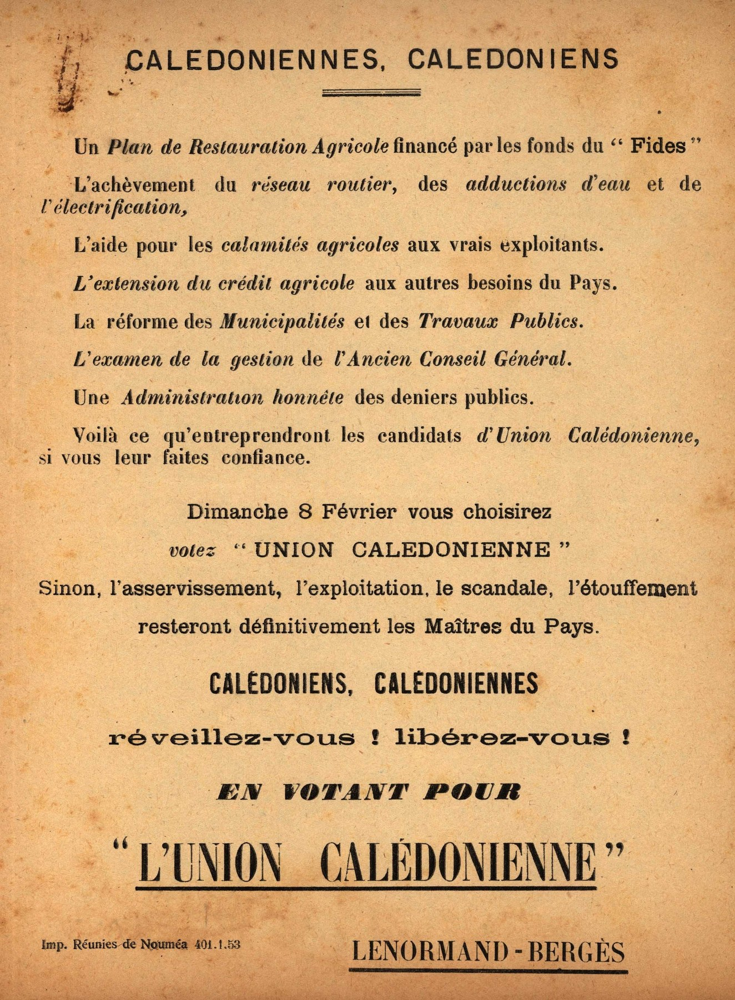
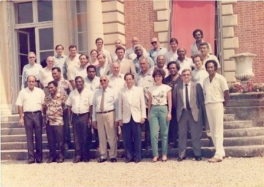

Évolution politique et institutionnelle · 1944-1998
Cinq périodes pour comprendre comment les équilibres politiques se sont construits
Ce parcours ne vous demande pas de retenir une succession de dates. Il vous aide à comprendre les transformations qui relient la fin de l’ordre colonial, l’émancipation politique, les évolutions statutaires, la confrontation puis le temps des accords.


Votre parcours
Cinq périodes, un même fil historique
L’ordre bascule
Émancipation politique
Autonomie et recompositions
Confrontation et négociation
Le temps des accords
Ce que vous devez savoir avant de commencer
Durée indicative : 1 h 05 à 1 h 15.
Vous pouvez interrompre le parcours et le reprendre plus tard.
Positionnement
Où en êtes-vous aujourd'hui ?
Six affirmations. Pas de bonne réponse, pas de note, pas de classement. En fin de module, vous verrez le chemin parcouru.
Prendre de la hauteur
1944-1998 · De l’indigénat à l’Accord de Nouméa : 50 ans d’évolution politique
Avant d’entrer dans les cinq périodes, cette vidéo vous donne la carte générale du parcours. Elle met en perspective les grands basculements que vous allez ensuite explorer plus précisément.
Cette vidéo d’ouverture donne la vue d’ensemble du parcours. Les cinq capsules suivantes approfondissent ensuite chaque période. Activez les sous-titres dans le lecteur lorsqu’ils sont disponibles.
En 1946, qu’est-ce qui bascule réellement : un statut, des droits ou l’ensemble de l’ordre politique ?
La première capsule installe le contexte de sortie de guerre et les ruptures qui touchent l’ordre colonial.
1944-1946
De la fin de l’indigénat à la citoyenneté : l’ordre colonial commence à basculer
La vidéo est hébergée hors du package. Votre écran de parcours est mémorisé ; si vous interrompez la capsule, le lecteur vidéo peut toutefois reprendre au début. Activez les sous-titres dans le lecteur lorsqu’ils sont disponibles.
Je regarde les documents
Les iconographies repères de la période
Quatre documents historiques sélectionnés pour éclairer les transformations de la période. Chaque image est retenue pour ce qu’elle permet de comprendre, pas seulement parce qu’elle appartient à l’époque. Cliquez sur une image pour l’agrandir.
Je prends position
Avant 1946 / ce que 1946 ouvre : classez les repères
Je comprends
Une rupture réelle, dont les effets politiques se déploient progressivement
La rupture
La loi du 7 mai 1946 proclame citoyens les ressortissants des territoires d’outre-mer. Elle constitue une rupture juridique majeure dans leur statut politique.
La suite
La citoyenneté ne produit pas instantanément une représentation politique pleine et entière : la période suivante montre comment l’organisation et la participation électorale se construisent.
Être citoyen suffit-il pour participer effectivement au pouvoir politique ?
Cette période suit le passage des droits reconnus à l’organisation politique puis à la représentation.
1946-1957
L’émancipation politique : de la citoyenneté à la représentation
La vidéo est hébergée hors du package. Votre écran de parcours est mémorisé ; si vous interrompez la capsule, le lecteur vidéo peut toutefois reprendre au début. Activez les sous-titres dans le lecteur lorsqu’ils sont disponibles.
Je regarde les documents
Les iconographies repères de la période
Quatre documents historiques sélectionnés pour éclairer les transformations de la période. Chaque image est retenue pour ce qu’elle permet de comprendre, pas seulement parce qu’elle appartient à l’époque. Cliquez sur une image pour l’agrandir.
Je comprends
Reconstruisez le chemin vers la représentation
Je relie
Des citoyens aux représentants
Ce que la vidéo montre
Le droit politique prend corps grâce à l’organisation collective, à l’élargissement de la participation électorale et à l’entrée de nouveaux représentants dans les institutions.
Ce que cela prépare
Une fois la représentation élargie, la question devient aussi celle des pouvoirs réellement exercés localement : c’est le fil de la loi-cadre de 1957.
Pourquoi l’autonomie ouverte en 1957 ne produit-elle pas un équilibre institutionnel durable ?
La capsule suit l’ouverture institutionnelle, les reprises en main successives et les transformations économiques et politiques des décennies suivantes.
1957-1981
De l’autonomie à la revendication indépendantiste : un paysage politique en recomposition
La vidéo est hébergée hors du package. Votre écran de parcours est mémorisé ; si vous interrompez la capsule, le lecteur vidéo peut toutefois reprendre au début. Activez les sous-titres dans le lecteur lorsqu’ils sont disponibles.
Je regarde les documents
Les iconographies repères de la période
Quatre documents historiques sélectionnés pour éclairer les transformations de la période. Chaque image est retenue pour ce qu’elle permet de comprendre, pas seulement parce qu’elle appartient à l’époque. Cliquez sur une image pour l’agrandir.
Je distingue
Quatre dynamiques, une même période
Le pont entre les capsules
1977-1981 : l’avenir politique devient un enjeu central
La vidéo s’arrête en 1977. Le module conserve cependant une période allant jusqu’à 1981 afin d’assurer la transition vers les années de confrontation et de négociation.
1976-1982
Le Congrès présente cette phase comme celle d’une « large autonomie », ouverte par le statut de 1976 et modifiée en 1979.
Années 1970-1980
Les sources institutionnelles décrivent une montée de la revendication indépendantiste et une recomposition des alliances politiques.
Transition
Le débat change de nature
D’une question d’autonomie, on passe progressivement à une confrontation sur l’avenir politique du territoire.
Pour la suite
La prochaine capsule suit la montée des tensions, les tentatives de négociation et le retour au dialogue en 1988.
Comment des positions politiques fortement opposées reviennent-elles à la négociation ?
Cette séquence traite une période de confrontation. L’objectif est d’en comprendre la dynamique, sans transformer les violences en ressort ludique.
1981-1988
De la confrontation au dialogue : la crise politique calédonienne
La vidéo est hébergée hors du package. Votre écran de parcours est mémorisé ; si vous interrompez la capsule, le lecteur vidéo peut toutefois reprendre au début. Activez les sous-titres dans le lecteur lorsqu’ils sont disponibles.
Je regarde les documents
Les iconographies repères de la période
Quatre documents historiques sélectionnés pour éclairer les transformations de la période. Chaque image est retenue pour ce qu’elle permet de comprendre, pas seulement parce qu’elle appartient à l’époque. Cliquez sur une image pour l’agrandir.
Je comprends la dynamique
Quatre états à remettre en relation
Je situe
1988 : un point de rupture
La capsule rassemble plusieurs événements d’avril et mai 1988 puis montre le retour à une démarche de dialogue. Le module ne cherche pas à reproduire leur charge émotionnelle : il les replace dans le basculement vers la négociation.
Lire une période de conflit
Les mots utilisés pour nommer cette période peuvent eux-mêmes être discutés. Ici, nous retenons une lecture factuelle des étapes et des transformations politiques, sans qualifier les intentions des acteurs.
Je relie
La négociation ne fait pas disparaître les désaccords
26 juin 1988
Signature de l’accord de Matignon.
Août 1988
L’accord d’Oudinot complète le dispositif institutionnel qui sera soumis au référendum national.
Après les accords de 1988, que faut-il transformer pour inscrire le compromis dans la durée ?
Cette dernière capsule suit la décennie de rééquilibrage et le passage des accords de Matignon-Oudinot à l’Accord de Nouméa.
1988-1998
De Matignon-Oudinot à l’Accord de Nouméa : dix ans pour construire un nouvel équilibre
La vidéo est hébergée hors du package. Votre écran de parcours est mémorisé ; si vous interrompez la capsule, le lecteur vidéo peut toutefois reprendre au début. Activez les sous-titres dans le lecteur lorsqu’ils sont disponibles.
Je regarde les documents
Les iconographies repères de la période
Quatre documents historiques sélectionnés pour éclairer les transformations de la période. Chaque image est retenue pour ce qu’elle permet de comprendre, pas seulement parce qu’elle appartient à l’époque. Cliquez sur une image pour l’agrandir.
Je relie
Construire l’équilibre : quels leviers pour quelles transformations ?
Je distingue
Deux étapes d’un même processus, deux fonctions différentes
Matignon-Oudinot · 1988
Ouvrir une période de dix ans de paix civile, de développement et de rééquilibrage, avec une nouvelle organisation territoriale.
Accord de Nouméa · 1998
Organiser un nouvel équilibre politique et institutionnel, avec notamment un processus de transferts de compétences et une citoyenneté propre à la Nouvelle-Calédonie.
Vue d’ensemble
Le chronoscope : explorer 54 ans de transformations
Sélectionnez un repère : le document s’ouvre immédiatement sans vous faire perdre votre position dans la frise. Vous pouvez explorer librement ou afficher seulement les grandes bascules qui structurent le récit.
Explorer
Filtrez par institutions, textes, mouvements, acteurs, accords ou contexte. Le repère choisi reste visible pendant que son document s’ouvre à droite.
Comprendre les bascules
Ce mode réduit la frise à une dizaine de jalons structurants et met en lumière leurs liens : ce qui prépare, transforme ou prolonge l’événement sélectionné.
Astuce : utilisez ← / → dans la fiche pour parcourir les repères sans revenir à la frise.
Méthode
Comment utiliser la frise sans apprendre une liste de dates ?
1. Cherchez un basculement
Une date est utile lorsqu’elle permet d’identifier ce qui change avant et après.
2. Reliez les fils
Institution, statut, contexte politique et accord évoluent ensemble, mais pas au même rythme.
3. Revenez-y en situation
La frise est conçue comme un repère consultable, pas comme une liste à mémoriser.
4. Gardez le périmètre
Le module explique l’évolution historique ; le fonctionnement actuel des institutions est traité dans le parcours présentiel du Congrès.
Je mobilise les repères
Quelle transformation est en jeu ?
À emporter
Les cinq transformations du parcours
Un point de bascule qui ouvre une nouvelle séquence politique.
Organisation politique, participation électorale et nouveaux représentants.
Les changements institutionnels se croisent avec les transformations économiques, démographiques et politiques.
La recherche d’une issue politique redevient possible après une phase de fortes tensions.
Une décennie d’accords transforme durablement l’organisation politique du territoire.
Positionnement
Où en êtes-vous maintenant ?
Les mêmes six affirmations qu'au départ. Répondez pour aujourd'hui.
Et avec le recul ?
Pourquoi cette seconde question
Au début du module, vous ne disposiez pas encore des repères qui permettent de s'évaluer. Beaucoup découvrent, en avançant, l'étendue de ce qu'ils ignoraient — et se noteraient aujourd'hui plus bas qu'au départ, alors qu'ils ont progressé.
Alors, avec le recul : où en étiez-vous vraiment avant de commencer ?
Module terminé
Vous avez terminé le module
Ce qu'il reste à emporter, et le chemin parcouru.
Le chemin parcouru
Comparaison entre votre regard rétrospectif sur votre niveau de départ et votre position d'aujourd'hui.
Vos auto-positionnements sont accessibles aux personnels IFAP habilités. Leur éventuelle communication à d'autres destinataires relève des règles de gouvernance arrêtées pour le dispositif.
À garder sous la main
La frise interactive reste accessible depuis le menu pour retrouver un repère, un changement de statut ou la logique d’une période.
Pour aller plus loin
Consultez l’espace « Sources et références » ainsi que les crédits du module.
Votre progression
La complétion atteste que vous avez parcouru les séquences et réalisé le positionnement de sortie. Aucun score ni classement n’est associé à ce module.
Recommencer le module
Cette action efface vos réponses et votre progression enregistrée, puis relance le module depuis le début.
Crédits
Crédits du module
| Commanditaire | Congrès de la Nouvelle-Calédonie. |
|---|---|
| Conception pédagogique et production numérique | IFAP — Institut de formation à l’administration publique. |
| Expertise historique et contenus de référence | Olivier Houdan. |
| Intégration technique | HTML / SCORM 1.2 pour la plateforme LIANE. Six vidéos hébergées hors package. |
| Version | Version v1.16 · V0 + liens YouTube actualisés · chronoscope plein écran · noyau 1.8.1 · septembre 2026. |
Vidéos du parcours
- Vue d’ensemble : 1944-1998 · De l’indigénat à l’Accord de Nouméa : 50 ans d’évolution politique.
- Période 1 : 1944-1946 · De la fin de l’indigénat à la citoyenneté : l’ordre colonial commence à basculer.
- Période 2 : 1946-1957 · L’émancipation politique : de la citoyenneté à la représentation.
- Période 3 : 1957-1981 · De l’autonomie à la revendication indépendantiste : un paysage politique en recomposition.
- Période 4 : 1981-1989 · De la confrontation au dialogue : la crise politique calédonienne.
- Période 5 : 1988-1998 · De Matignon-Oudinot à l’Accord de Nouméa : dix ans pour construire un nouvel équilibre.
Iconographies historiques du module
| Période | Documents intégrés | Crédits et droits |
|---|---|---|
| 1944-1946 | Café à Canala · Brazzaville · loi Houphouët-Boigny · Lamine Guèye | Documents historiques sélectionnés pour le module. Crédits originaux à consolider lorsque l’auteur ou le fonds n’est pas identifié. |
| 1946-1957 | Profession de foi de 1953 · bureau UICALO · Maurice Lenormand · congrès fondateur de l’UC | Documents historiques sélectionnés pour le module. Crédits originaux à consolider lorsque l’auteur ou le fonds n’est pas identifié. |
| 1957-1981 | Premier exécutif de 1957 · boom du nickel · Foulards rouges · Mélanésia 2000 | Documents historiques sélectionnés pour le module. Crédits originaux à consolider lorsque l’auteur ou le fonds n’est pas identifié. |
| 1981-1988 | Nainville-les-Roches · Éloi Machoro à Canala · mission du dialogue · poignée de mains Tjibaou-Lafleur | Photo d’Éloi Machoro à Canala : Louise Takamatsu. Autres crédits originaux à consolider. |
| 1988-1998 | Oudinot · trois provinces · accord de Bercy · Accord de Nouméa | Documents historiques sélectionnés pour le module. Crédits originaux à consolider lorsque l’auteur ou le fonds n’est pas identifié. |
Crédits iconographiques
Avant toute diffusion externe, les auteurs, fonds détenteurs et conditions de réutilisation des documents dont le crédit original n’est pas encore identifié devront être consolidés.
Sources
Sources et références
Le corpus principal est constitué des contenus de référence d’Olivier Houdan et des six capsules produites pour le parcours. Les repères juridiques et institutionnels ci-dessous ont été vérifiés sur des sources officielles ou institutionnelles. Liens consultés le 18 septembre 2026.
- Expertise historique et corpus de référence : Olivier Houdan.
- Citoyenneté en 1946 : loi n° 46-940 du 7 mai 1946, Légifrance — ouvrir la source.
- Loi-cadre et institutions de 1957 : décret n° 57-811 du 22 juillet 1957, Légifrance — ouvrir la source.
- Reprise en main puis large autonomie, 1965-1982 : Congrès de la Nouvelle-Calédonie, histoire de l’Assemblée territoriale — ouvrir la source.
- Succession des assemblées : Conseil général → Assemblée territoriale → Congrès du Territoire → Congrès de la Nouvelle-Calédonie — ouvrir la source du Congrès.
- Premiers élus mélanésiens au Conseil général (1953) : Congrès de la Nouvelle-Calédonie — ouvrir la source.
- Nainville-les-Roches et statuts 1982-1985 : Congrès de la Nouvelle-Calédonie — ouvrir la source.
- Congrès du Territoire et provincialisation : Congrès de la Nouvelle-Calédonie — ouvrir la source.
- Accords de Matignon-Oudinot, rééquilibrage, programme 400 cadres et Accord de Nouméa : services de l’État en Nouvelle-Calédonie — ouvrir la source.
- Préalable minier et accord de Bercy du 1er février 1998 : Assemblée nationale, travaux préparatoires relatifs à l’Accord de Nouméa — ouvrir la source.
- Union calédonienne, recompositions politiques et boom du nickel : Maison de la Nouvelle-Calédonie, ressources historiques — ouvrir le site.